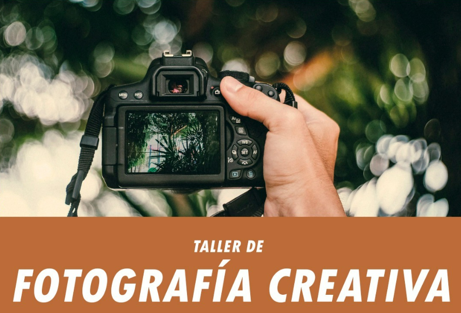

FOTOGRAFÍA CREATIVA
Profesora: Bárbara Villarreal
A PARTIR DE LOS 12 AÑOS
Fomentar la creatividad y la expresión artística a través de la fotografía. Promover el juego y la diversión como herramientas para aprender y experimentar. Incentivar el trabajo en equipo. Potenciar la capacidad de observación e interpretación descubriendo su propia visión artística y así poder transmitir su sentir a partir de las imágenes Enseñar los conceptos básicos de la fotografía como encuadre, composición, luz, color, entre otras cosas. Desarrollar habilidades y técnicas en el manejo de la cámara / teléfono celular.
